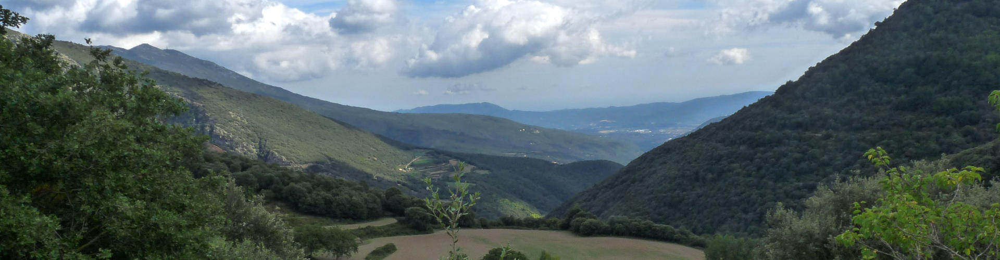

Ruta · Palautordera
Aquest itinerari ens permet recórrer un tram del torrent del Abaus , amb característiques d’indret humit, per enfilar-nos tot seguit a les serres que suposen la divisòria de les conques…